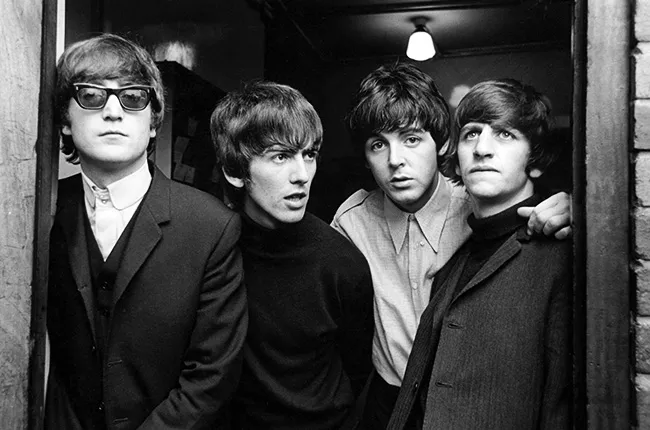

Com certeza! Revolver (1966) é um álbum monumental, frequentemente citado como o ponto de viragem mais significativo na carreira dos Beatles e a verdadeira faísca para a era da música psicodélica.
Lançado em 5 de agosto de 1966 , ele marcou o momento em que os Beatles pararam de ser primariamente uma banda pop ao vivo e se tornaram mestres absolutos do estúdio.

Inovação de Estúdio
As sessões de gravação de Revolver foram extremamente longas (mais de 220 horas!) e repletas de experimentação. Os Beatles, juntamente com o produtor George Martin e o engenheiro de som Geoff Emerick (que tinha apenas 20 anos na época), criaram técnicas que se tornaram padrão na música:
Loops de Fita (Tape Loops): Fitas de áudio gravadas sendo cortadas, invertidas e recombinadas para criar novos sons e texturas (especialmente em "Tomorrow Never Knows").
ADT (Automatic Double Tracking): Uma técnica inventada para simular uma duplicação vocal sem que o artista precisasse cantar duas vezes, dando um efeito "grosso" ao som (John Lennon amava e odiava o processo de dublar a voz).
Gravação Invertida (Backwards Recording): George Harrison tocou partes de guitarra gravadas e reproduzidas ao contrário em "I'm Only Sleeping," uma das primeiras aplicações dessa técnica na música pop.
Microfonação Close-Miking: A banda insistiu em posicionar microfones mais próximos dos instrumentos (como a bateria de Ringo) para obter um som mais potente e cru, desafiando as convenções da EMI na época
Diversidade e Psicodelia
O álbum abandonou o formato de canções de amor simples e se aprofundou em temas complexos e gêneros variados
A Arte da Capa
A capa, desenhada por Klaus Voormann (amigo da banda desde os dias em Hamburgo), é uma colagem em preto e branco com desenhos à caneta e fotos, e ganhou o Grammy de Melhor Capa de Álbum.
Conclusão: Revolver é o álbum que marcou a liberdade criativa e a ambição musical dos Beatles, provando que um álbum pop poderia ser uma obra de arte complexa e de vanguarda.
Krig-ha, Bandolo! - Raul Seixas
28/11/2025
Uma mosca na sopa na música brasileira
O álbum "Krig-ha, Bandolo!" é um marco absoluto na história do rock brasileiro e na carreira de Raul Seixas. Lançado em 1973, é considerado o álbum que realmente lançou Raul ao estrelato nacional, estabelecendo sua persona de "Maluco Beleza" e seu estilo único, misturando rock and roll, baião, elementos esotéricos e críticas sociais.
O Grito de Guerra: Título e Capa
O título é uma referência direta aos quadrinhos do Tarzan da década de 1930. A frase, no idioma mangani (língua dos primatas nas HQs), é um grito de guerra que significa:
"Cuidado, aí vem o inimigo!" (ou "Cuidado, o inimigo está à vista!").
Isso reflete a postura do álbum: um aviso, uma revolta e um questionamento direto à sociedade e ao status quo da época.
A Capa
A capa é uma das mais icônicas da discografia brasileira. Raul posa sem camisa, com os braços abertos, em uma postura que lembra a de Cristo crucificado, mas com uma atitude de "anti-star". Na palma de sua mão direita está desenhado o símbolo da Sociedade Alternativa, a filosofia libertária que ele e seu parceiro Paulo Coelho estavam desenvolvendo.
O Início de Tudo
"Krig-ha, Bandolo!" marca o início da lendária e explosiva parceria de composição entre Raul Seixas e Paulo Coelho. Paulo Coelho, o "intelectual" da dupla, trouxe a Raul um novo nível de sofisticação filosófica e esotérica para as letras, que Raul transformava em rock bruto e genial.
Contracultura e Ditadura
O álbum foi lançado no auge da Ditadura Militar (período do "milagre econômico" sob o governo Médici), quando a repressão era forte e o consumo era incentivado. Raul usou o disco como um veículo de contracultura, questionando o conformismo e a ilusão de prosperidade.
A ousadia das letras fez com que Raul Seixas e Paulo Coelho fossem levados a depor no DOPS (Departamento de Ordem Política e Social) para se explicarem sobre suas criações.
O álbum é um verdadeiro hit-maker e contém algumas das canções mais importantes de Raul Seixas:
Ouro de Tolo: Foi o carro-chefe, lançado previamente em compacto. É uma crítica devastadora e sarcástica à vida de classe média, ao consumo e ao conformismo, com o famoso verso: "Eu que não me sento no trono de um apartamento..."
Mosca na Sopa: Uma das mais emblemáticas, é um rock com batucada de candomblé e berimbau. A "mosca" é o elemento subversivo, incontrolável, que perturba a ordem (a "sopa" da sociedade). A letra é um desafio direto ao sistema.
Metamorfose Ambulante: Um hino à liberdade de pensamento e à inconstância da vida. A música recusa dogmas e a obrigatoriedade de ser o mesmo sempre: "Eu prefiro ser essa metamorfose ambulante, do que ter aquela velha opinião formada sobre tudo."
Al Capone: Uma crítica inteligente e bem-humorada à corrupção, com referências a figuras históricas e criminosas, como Al Capone e Júlio César.
O álbum começa de uma forma peculiar e pessoal: com uma faixa chamada "Introdução: Good Rockin' Tonight", que é uma gravação caseira de Raul Seixas aos 9 anos de idade, balbuciando a canção de Roy Brown (imortalizada por Elvis Presley). Isso reforça a ideia de autenticidade e a essência roqueira de Raul desde a infância.
"Krig-ha, Bandolo!" não é apenas um disco; é um manifesto que consolidou a identidade de Raul Seixas como o Maluco Beleza e um dos maiores artistas da música popular brasileira.
Da Lama ao Caos - Chico Science & Nação Zumbi
25/11/2025
Um Clássico vindo dos Mangues do Recife
"Da Lama ao Caos" é um álbum seminal e revolucionário da música brasileira, sendo o disco de estreia da banda pernambucana Chico Science & Nação Zumbi, lançado em 1994.
Este álbum é considerado o manifesto do movimento Manguebeat, uma fusão cultural e musical que combina ritmos regionais de Pernambuco (como maracatu, frevo, e côco) com gêneros universais como rock, funk, hip-hop, e música eletrônica. O conceito do Manguebeat é expresso no encarte do álbum através do texto "Caranguejos com Cérebro".
O Projeto das Gravações do Álbum
Em 1993, o movimento manguebeat ganhou força e repercussão em todo o Brasil. Depois de alguns shows em Recife e região, e apenas uma apresentação em São Paulo e outra em Belo Horizonte, o grupo assina contrato com a Sony Music, em julho do mesmo ano.
Inicialmente, Chico Science tinha em mente o nome de Arto Lindsay ou Bill Laswell para a produção do disco. No entanto, a Sony Music indicou Liminha. Após ouvir uma demo em fita cassete enviada pelo diretor da Sony Music, Jorge Davidson, Liminha aceitou produzir o álbum.
O grupo foi para o Rio de Janeiro gravar no estúdio Nas Nuvens, propriedade de Liminha, onde o material para o álbum foi gravado em sessões de 12 horas, de segunda a sábado. Neste momento, o grupo era composto por Chico Science, Jorge Du Peixe, Gilmar Bolla 8, Gira, Canhoto e Toca Ogan. Muitos destes músicos faziam parte do grupo Lamento Negro.
Os percussionistas Canhoto, Gira, Gilmar Bolla 8, Jorge du Peixe e Toca Ogan não tinham baquetas próprias e acabaram gravando com as de João Barone. A falta de experiência do grupo em estúdio e o uso de instrumentos incomuns à indústria fonográfica, como as alfaias, tornaram a produção do álbum complexa. O álbum foi lançado em abril de 1994, meio à segunda edição do festival Abril Pro Rock, onde a banda se apresentou.
Poucos meses após o lançamento de Da Lama ao Caos, a faixa "Rios, Pontes e Overdrives", parceria entre Chico Science e Fred Zero Quatro, foi gravada pela banda Mundo Livre S/A e lançada junto ao álbum Samba Esquema Noise.
Conteúdo Lírico
É possível perceber a influência da obra de Josué de Castro, principalmente Geografia da Fome e Homens e Caranguejos, sobre as composições de Chico Science. Para Túlio Velho Barreto, versos de "Rios, Pontes e Overdrives", "Antene-se", "Da Lama ao Caos" e "Risoflora" podem ser entendidos como releituras do romance Homens e Caranguejos. A faixa-título cita nominalmente o geógrafo autor dos livros. Castro já havia sido mencionado como pessoa de interesse do movimento Manguebeat em 1992, no manifesto dos Caranguejos com cérebro.
Além disso, o álbum aborda assuntos como ficção científica, teoria do caos, a urbanização e a desigualdade social na Região Metropolitana do Recife. Na primeira faixa, identifica-se uma demanda por mudanças sociais em Pernambuco, saudando revolucionários como Emiliano Zapata, Augusto César Sandino, Antônio Conselheiro, o Partido dos Panteras Negras e Zumbi dos Palmares. Tanto em "Monólogo ao Pé do Ouvido quanto em Banditismo por Uma Questão de Classe" há menções ao cangaceiro Lampião.
A faixa "Salustiano Song" faz referência a Mestre Salustiano, rabequeiro pernambucano que serviu de inspiração para Chico Science durante sua juventude. Em alguns trechos da faixa, a guitarra foi tocada por Lúcio Maia utilizando um EBow, a fim de tornar o som das cordas semelhante ao de uma rabeca.
Rocket to Russia - Ramones
18/11/2025
"Gabba Gabba Hey"
É duro ser um garoto de doze anos afundado até o queixo no lodoso tédio urbano. Todo mundo dá palpite na sua vida. O status em casa e na rua, a voz e até o corpo ainda são de criança - mas os instintos são de homem. E as garotas, todas ficando peitudas, não estão nem aí pra você. Escrotas. Piranhas.
A única saída é dar uma de muito mais durão do que você realmente é. Começar a beber, fumar, bater punheta direto. E estar pronto para sacrificar qualquer ciosa por alguns momentos de diversão adrenal.
Mas dá mesmo pra sacrificar? É difícil. Nem todo mundo é durão de verdade. Dá até pra afetar a cara de mau, mas no fundo você gosta é de ver Sessão da Tarde, jogar fliperama, tomar milkshake, ouvir rock altão no seu quarto só pra zoar a mãe, pegar uma praia, passear ao crepúsculo de mãos dadas com sua baby (quem dera).
Dá pra jogar tudo para o alto só por um pouco de alegria? Vale a pena matar aula o tempo inteiro, não estar nem aí com a escola? Bem, se isso garantir a admiração das minas e o respeito dos colegas ... Mas e se depois você acabar tomando pau por causa disso? Cheirar cola é gostoso ... mas faz mal! Mas ... qual é o problema de fazer mal? No fundo você vai acabar morrendo mesmo!
Viver é uma confusão desgraçada - e nunca isso fica mais claro na vida de um homem do que quando começam a aparecer os primeiros pelos na cara.
O absurdo é que quatro nova-iorquinos broncos tenham capturado com tanta precisão este estado de espírito púbere que-se-foda. Sem intelectualismo nem autoparódia e em plena hegemonia Yes-Zep, os Ramones inventaram o som da adolescência. Puro, sem misturas, sem gelo. As bases já existiam, claro. O rock de garagem dos anos 1960, a surf music, o bubblegum, Stooges, os Stones do começo, New York Dolls. O próprio Joey Ramone começou a cantar numa banda glam (o Sniper).
Mas os Ramones levaram a coisa um passo adiante, indo direto ao esqueleto do negócio: músicas de dois minutos, refrãos simples e riffs primários, letras que viam a dor e a delícia de ser teenager através do ray-ban da cultura popular mais acessível e rastaquera.
Tudo tão rápido, pesado e pegajoso quanto possível. Urgente como um comercial de TV. Punk rock, mesmo - se você pensar que punk originalmente significa vagabundo de rua, tranqueira, cara inútil para a sociedade.
Rocket to Russia pegou o que já era perfeito - os dois primeiros discos do grupo, Ramones e Leave Home, ambos de 1976 - e elevou à categoria de transcendental. Tem duas covers, "Do You Wanna Dance?" e "Surfin' Bird", que dispensam comentários. E outras doze faixas originais essenciais, escritas com senso de humor, produzidas com capricho minimalista e executadas com a fúria e o tesão de quem está se divertindo pra cacete - contra tudo e todos. Entre "Rockaway Beach" e Teenage Lobotomy" está tudo o que você precisa saber sobre rock.
Também tem "Sheena is a Punk Rocker", "Cretin Hop", "I Wanna Be Well" - mas escute, não é isso o que importa. Não importa que Johnny Rotten e Joe Strummer e esse bando todo de ingleses tenham se inspirado e imitado os Ramones, nem que grande parte da new wave, do punk e todo o hardcore deva as calças ao quarteto. Não importa a famosa cena do CBGB, nem o Blondie, nem os Talking Heads. Se discos futuros seriam irregulares, se eles bebiam ou se drogavam, se eles se repetiram, se Dee Dee compunha melhor que Johnny, se Marky isso e aquilo - naaaada disso importa!
O que importa é Joey Ramone cantando "I don't care about this world / I don't care about that girl ... I don't care". Eu não tô nem aí, não tô nem aqui e quero que tudo mais vá pro inferno. I just wanna have some fun.
Ramones, a melhor banda de rock and roll da história.
Texto escrito por André Forastieri e publicado na Bizz #077, dezembro de 1991
Rocket to Russia é o terceiro álbum de estúdio da banda americana de punk rock Ramones, lançado em 4 de novembro de 1977.
É amplamente considerado um dos seus álbuns mais fortes e influentes, que aprimorou a fórmula do punk rock rápido e agressivo do grupo, adicionando elementos de surf rock e pop punk.
O título, que significa "Foguete para a Rússia", é visto como uma brincadeira irônica com o contexto da Guerra Fria na época.
Curiosidades e Fatos Importantes:
Último com o Baterista Original: Foi o último álbum dos Ramones a contar com a participação do baterista original, Tommy Ramone, que também o produziu (sob o pseudônimo de T. Erdelyi) junto com Tony Bongiovi.
A Capa e o Humor: O álbum é repleto de humor ácido e crítica social. A arte da contracapa, ilustrada por John Holmstrom (editor da revista Punk), tem um tema militar com um desenho anti-comunista e estereótipos, reforçando o tom irônico da banda.
Grandes Clássicos: O álbum apresenta algumas das músicas mais famosas da banda, muitas vezes sendo confundido com uma coletânea de "melhores hits", incluindo:
"Sheena Is a Punk Rocker" (Lançada anteriormente como single, mas incluída no álbum).
"Rockaway Beach"
"Teenage Lobotomy"
"Cretin Hop"
Nevermind - Nirvana
05/11/2025
'Nevermind', 30 anos: álbum que subverteu o mercado musical ainda é um marco além do rock
O álbum "Nevermind" da banda Nirvana, lançado em 1991, é um dos discos mais influentes e importantes da história da música. Ele não é apenas um álbum de rock, mas sim o marco que levou o Grunge ao estrelato global e alterou para sempre a paisagem musical da década de 90.
Contexto e Revolução
O Início do Fim do Hair Metal: Antes de Nevermind, as paradas de sucesso eram dominadas pelo pop e pelo glam rock/hair metal. O álbum do Nirvana, com sua sonoridade crua, letras introspectivas e atitude anti-establishment, ofereceu uma alternativa autêntica que ressoou com uma nova geração.
O Sucesso Inesperado: A gravadora esperava que vendesse cerca de 250 mil cópias. No entanto, impulsionado pelo single "Smells Like Teen Spirit", o álbum rapidamente ultrapassou as expectativas, destronando Dangerous de Michael Jackson do topo das paradas e estabelecendo o Nirvana como a maior banda do mundo.
Legado e Impacto
Mudança Cultural: Nevermind não só vendeu milhões de cópias, como também influenciou a moda, a cultura e a atitude dos jovens. Ele transformou a cidade de Seattle no epicentro do mundo musical.
O Preço da Fama: O sucesso massivo do álbum trouxe a Kurt Cobain uma fama que ele nunca desejou, levando-o a lutar contra a depressão e a pressão de ser a "voz de uma geração". Essa tensão foi o tema central do álbum seguinte, In Utero.
Em resumo, Nevermind é um álbum raro que é simultaneamente um clássico de crítica e um fenômeno comercial, e sua importância na história do rock é inquestionável.
Thriller - Michael Jackson
31/10/2025
Thriller é um dos discos mais vendidos da história, com ele, Michael Jackson revolucionou a indústria da música
Thriller (1982), um dos discos icônicos de Michael Jackson. O álbum se tornou um dos mais vendidos da história, rendeu o recorde de oito Grammys ao cantor e revolucionou a indústria da música.
Além do sucesso de vendas, o disco foi também um marco na luta contra a discriminação racial. Em março de 1983 o videoclipe de “Billie Jean” estreou na MTV, fazendo de Michael o primeiro negro cuja música ganhou espaço na emissora.
Equipe e produção
Jackson trabalhou em Thriller com Quincy Jones, mesmo produtor de seu primeiro disco solo Off The Wall de 1979 e fez questão de trazer os mesmos músicos, incluindo o engenheiro de som Bruce Swedien, o baixista Louis Johnson (The Brothers Johnson), o tecladista Greg Phillinganes e o trompetista Jerry Hey. Membros da banda Toto também foram convidados, assim como Rod Temperton, que escreveu três canções em Off The Wall, incluindo “Rock With You” e a faixa-título.
Voz de Michael Jackson em “Billie Jean” foi gravada em tubos de papelão
Com três salas funcionando ao mesmo tempo no studio em Los Angeles, Jones buscava criar sons “diferenciados” e para isso, usou todas as ferramentas necessárias. Em “Billie Jean”, Jackson gravou alguns de seus vocais em tubos de papelão.
Participações especiais
Em “Beat It”, Jones ‘roubou’ Eddie Van Halen para o solo de guitarra. Já em “Thriller” faixa-título do disco, contou com o mestre do terror Vincent Price, que trouxe os “cães do inferno” para o processo e acrescentou a risada maníaca no começo da faixa.
“The Girl Is Mine” foi o single principal do disco, a faixa é um dueto leve com Paul McCartney, uma das únicas, já que as demais foram gravadas em um ritmo acelerado.
Michael Jackson escreveu quatro faixas: “The Girl Is Mine”, “Billie Jean”, “Beat It” e a abertura do álbum “Wanna Be Startin’ Somethin.” Rod Temperton acrescentou três – “The Lady in My Life”, “Baby Be Mine” e “Thriller.”
Steve Porcaro acrescentou “Human Nature” e Jones escreveu “P.Y.T. (Pretty Young Thing)” com James Ingram. Sete dessas faixas são lançadas como singles, começando com “The Girl Is Mine” com McCartney. Todas fizeram parte do Top 10 paradas da Billboard nos Estados Unidos.
Números de Thriller
O disco custou cerca de U$750 mil dólares para ser produzido e rendeu no mínimo U$100 milhões para Michael Jackson. Thriller se tornou o álbum mais vendido de todos os tempos. Em fevereiro de 2017 o disco atingiu a marca de 33 milhões de cópias vendidas nos Estados Unidos e mais de 105 milhões em todo o mundo desde seu lançamento.